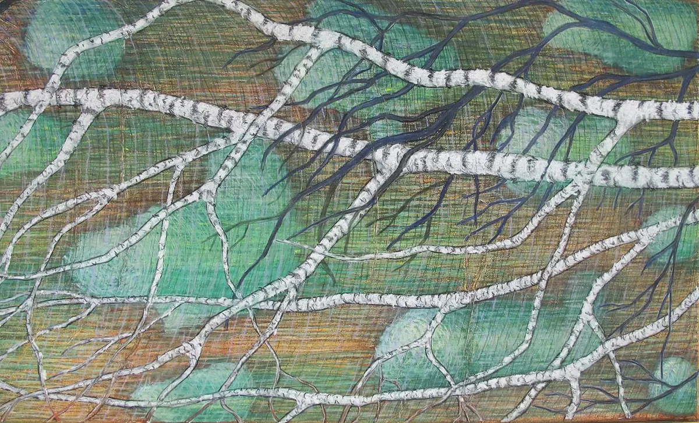
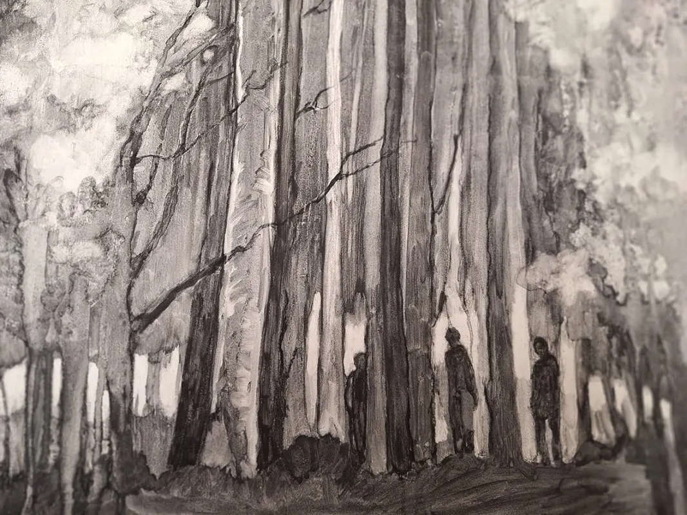
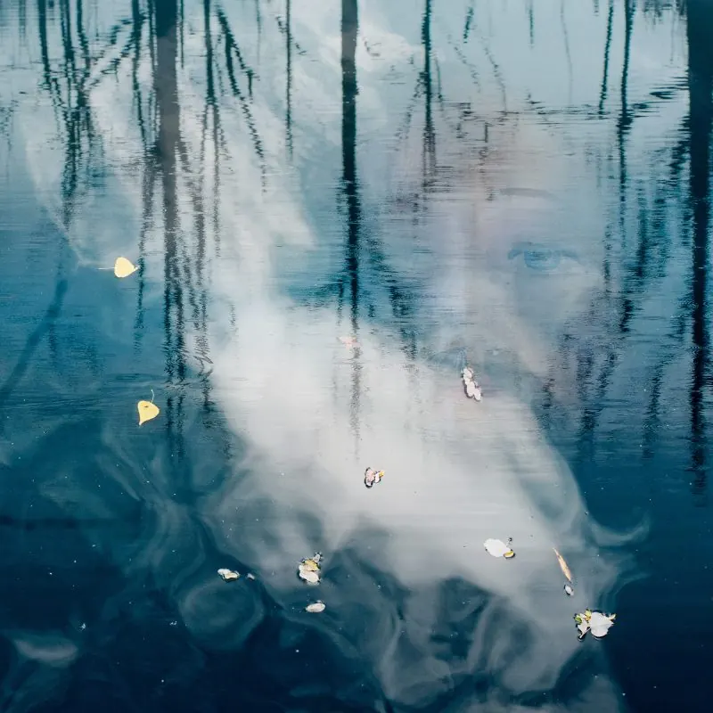

Dit is een testomgeving. De echte pagina staat op
www.nijmegenonline.nl
.
Kom in contact
Adverteren
Vacatures
Home
Inspiratie opdoen
Gidsen
Bedrijvengids
Agenda
Home
›
Agenda
› Kunstkring Wijchen
Evenementen bij Kunstkring Wijchen
Kasteellaan 13, 6602 DA Wijchen
Binnenkort
22
okt

Expositie Monique van Stokkum in het Kunsthuis Wijchen
Nu, t/m 25 okt
Kunstkring Wijchen
Eerder bij Kunstkring Wijchen
12
sep

Expositie Ingrid Menge in het Kunsthuis Wijchen
12 sep 2026
Kunstkring Wijchen
4
aug

Expositie Joy Dekok in het Kunsthuis Wijchen
4 aug 2026
Kunstkring Wijchen